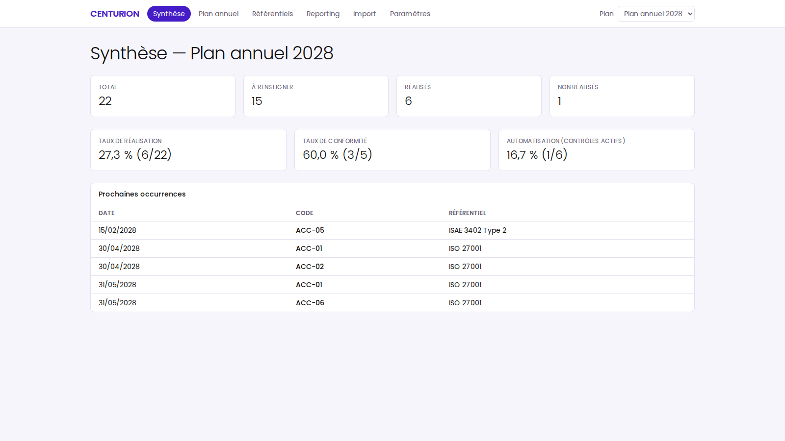
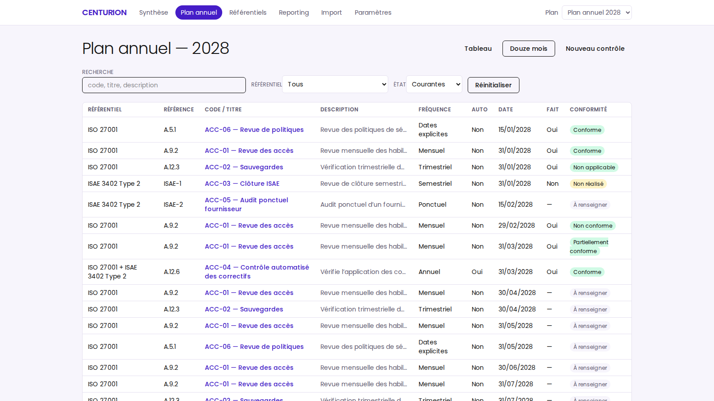
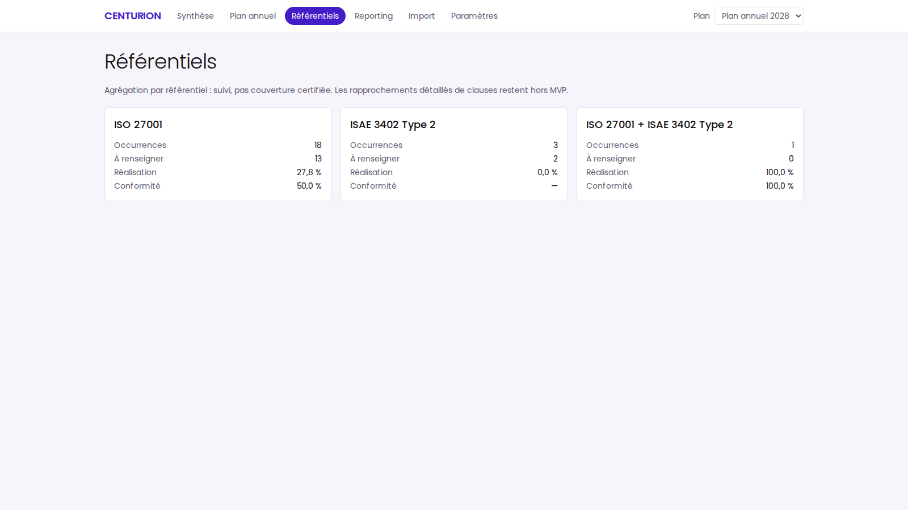
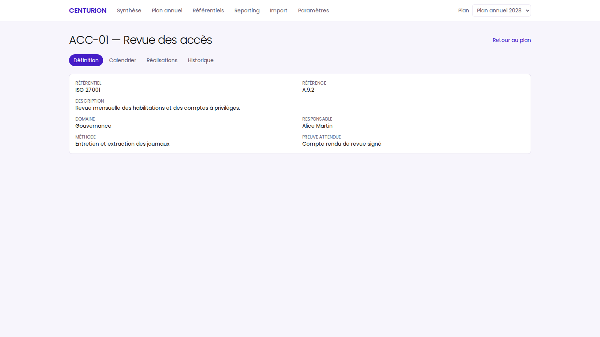
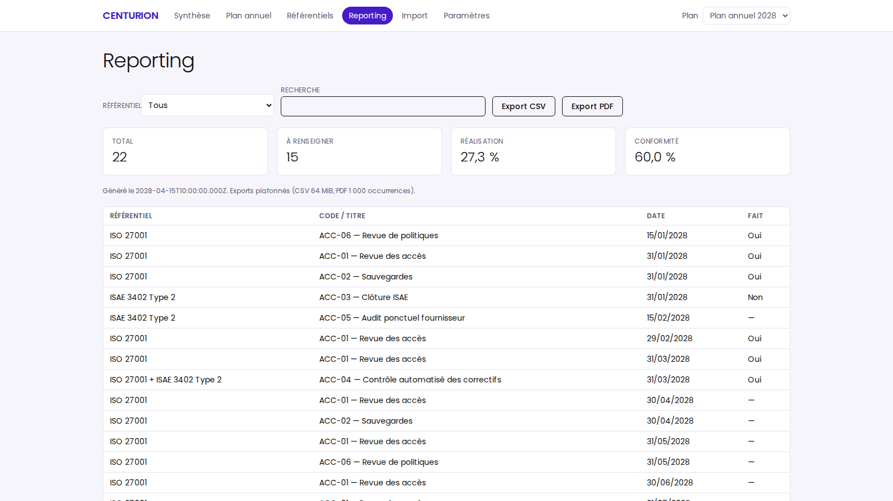
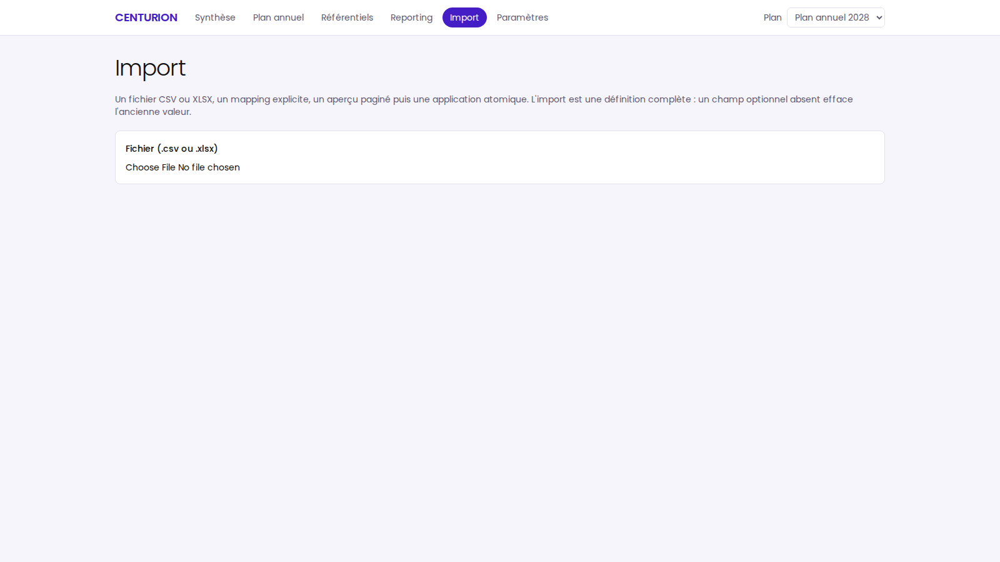
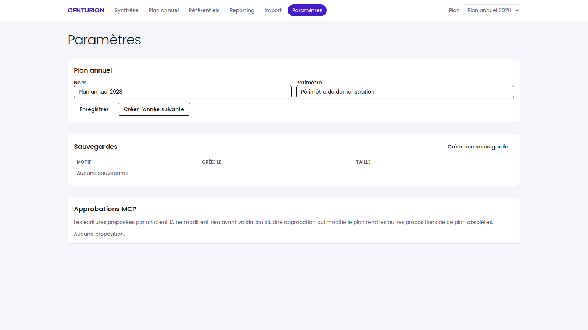

01 / PLANIFIER
Échéances claires
Fréquences ponctuelles ou récurrentes, dates explicites et aperçu du calendrier.
CENTURION rassemble le plan de contrôle, les réalisations et les preuves dans un cockpit simple, traçable et prêt pour les équipes.
Les échéances, les responsables et les justificatifs sont souvent dispersés. CENTURION les réunit autour d’un plan annuel lisible.
Fréquences ponctuelles ou récurrentes, dates explicites et aperçu du calendrier.
Enregistrer le fait, le résultat de conformité, la date et les commentaires.
Conserver une référence de preuve et partager une vue exploitable en reporting.


Garder le catalogue de contrôles organisé par référentiel, domaine et code.

Renseigner le fait, la conformité, la date, la preuve et le commentaire.

Explorer les résultats et exporter les éléments de suivi.


« Planifier, réaliser, justifier et restituer :
un parcours de contrôle continu. »
CENTURION donne aux équipes un point de départ commun pour structurer le plan annuel, suivre les résultats et retrouver les preuves.
